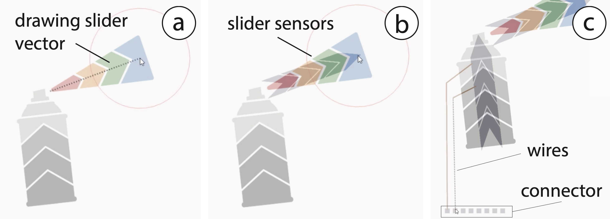

Since 2017 © MIT CSAIL (HCI Engineering group) [redesign by
moji
].
All Rights Reserved.


Sprayable User Interfaces: Prototyping Large-Scale Interactive Surfaces with Sensors and Displays.
In Proceedings of CHI 2020.Figure 1. Sprayable User Interfaces enable makers to create large-scale interactive surfaces on various materials and curved geometries. After designing an interactive artwork (a), our tool supports their fabrication with auto-generated stencils (b) enabling novel user interfaces that cover entire rooms (c), integrate in interactive architecture (d), and smart cities (e).
We present Sprayable User Interfaces: room-sized interactive surfaces that contain sensor and display elements created by airbrushing functional inks. Since airbrushing is inherently mobile, designers can create large-scale user interfaces on complex 3D geometries where existing stationary fabrication methods fail.
To enable Sprayable User Interfaces, we developed a novel design and fabrication pipeline that takes a desired user interface layout as input and automatically generates stencils for airbrushing the layout onto a physical surface. After fabricating stencils from cardboard or projecting stencils digitally, designers spray each layer with an airbrush, attach a microcontroller to the user interface, and the interface is ready to be used.
Our technical evaluation shows that Sprayable User Inter-faces work on various geometries and surface materials, such as porous stone and rough wood. We demonstrate our system with several application examples including interac-tive smart home applications on a wall and a soft leather sofa, an interactive smart city application, and interactive architecture in public office spaces.
Since the early 1990s, Human-Computer Interaction researchers have envisioned a world in which digital user interfaces are seamlessly integrated with the physical environment until the two are indistinguishable from one another (Computer of the 21st century [29]).
One of the greatest challenges in enabling this future is the integration of sensors and display elements with the physical environment, since the fabrication of interactive surfaces requires many design considerations, including how to ad-here the elements to different materials and how to apply them onto irregular surface geometries in a manner accessible to novice users.
Over the last few years, novel fabrication methods have been developed that enable the fabrication of displays and sensors using inkjet- and screen-printing (PrintScreen [19]) as well as hydrographics (ObjectSkin [6]). However, all of these methods are limited to small-scale geometries, i.e. they are bound by the volume of the fabricating device, such as the size of the printer, the area of the screen-printing net, or the size of the hydrographic bath.
In this paper, we explore how to make large-scale user inter-faces using spraying as the fabrication method. Unlike many existing techniques, such as 3D printing, screen printing or inkjet printing, spraying is not bound to a specific volume and, as often demonstrated by graffiti artwork, can create output that covers entire walls and even building facades. In addition, since spraying is a non-contact meth-od, it works well on various surface textures (wallpaper, concrete, wood, bathroom tiles) and surface geometries, such as those with strong curvature (e.g., doubly curved geometries in modern architecture) and sharp angles (e.g., room/building corners).
To facilitate the design of Sprayable User Interfaces, we present a toolkit, which is integrated into a 3D editor and supports designers in creating artwork with interactive elements, such as integrated electroluminescent displays, prox-imity sensors and touch buttons and sliders. On export, the toolkit generates either a set of fabricated stencils (high-precision spraying on simple flat and singly curved surfaces) that the designer cuts from cardboard and adheres to the surface before spraying, or a set of projected stencils (less precise, but work for complex doubly-curved surfaces) that are displayed onto the surface via a projection pattern. After generating the stencils, designers spray each layer using a standard airbrush machine, attach a microcontroller to the user interface, and the interface is ready to be used.
Our work contributes to the vision of blending digital user interfaces with the physical environment and extends it to large-scale interactive surfaces. Since our method only uses DIY equipment, i.e. an airbrush system and a set of sten-cils, our work is readily accessible to HCI researchers and the maker community.
In summary, our core contributions are:In this paper, we explore the use of spraying as a fabrication technique for making large-scale interactive surfaces. These interactive surfaces contain input elements, such as touch sensors, sliders, and proximity sensors, as well as output elements, such as electroluminescent displays.
Spraying has several key benefits over existing fabrication methods, such as inkjet-printing and screen printing:The remainder of the paper is structured as follows. We will first provide some background information on the hardware of our system, i.e. the airbrush and inks, and then provide details on the stencils and how they are used in the spray-ing process to create different interactive elements. Follow-ing this, we provide a walkthrough of our toolkit, detailing how users convert their digital design into a physical user interface and demonstrate this with an example of an inter-active smart home application on a wall. We then show a series of additional applications, including an interactive room, an interactive public map sprayed on a real-life build-ing, and a piece of interactive furniture. Finally, we conduct a technical evaluation of our spraying method, including a discussion of the challenges, and provide details on our implementation.
Figure 2 shows our portable airbrush hardware. It consists of a mobile airbrush system, a set of functional inks re-quired to create touch input and display elements, and basic safety tools for spraying.
Figure 2. Our hardware setup includes an airbrush, functional inks, and safety tools.
We next provide background information on the choice of airbrush and types of functional inks.
Airbrush: Airbrushes are usually classified based on three characteristics: the trigger mechanism (double action, auto-matic, pistol grip or single action), the feed system (gravity fed, siphon fed or side feed) and the mix point, i.e. the point at which the air and paint mix; either inside the air-brush or externally after leaving the nozzle. For the trigger mechanism, we chose a double action because it simultane-ously controls the paint volume and airflow which enables spraying fine patterns with less ink or large areas with more ink. For the feed system, we chose gravity-fed, which al-lows paint to be fed into the airbrush by its own weight. This is important for inks with large particles that tend to settle at the bottom of the container quickly. For the mix point, we chose an internal system which is more suited to fine details; systems with an external mix point are prefera-ble for spraying large areas. Together, these configurations are most suitable for painting in fine detail, which is neces-sary for creating circuits. We use the airbrush with two dif-ferent nozzles: a 0.35mm nozzle for the clear conductor and dielectric ink, and 0.8mm for the copper and phosphor inks. The wider nozzle for the copper and phosphor inks is preferable to prevent clogging due to the larger particle sizes.
Functional Inks: For spraying, inks must have a low viscosity appropriate to the nozzle size of the airbrush (i.e. thicker inks require a larger nozzle), or be thinned to achieve the required consistency. Any particles included must be small enough to ensure consistency in flow through the nozzle and to prevent clogging. In our system, we utilize copper, dielectric, phosphor, and clear conductor inks from Lumilor and KPT that are already prepared for usage in airbrush systems. Before using the inks, it is im-portant to filter out bulks of particles that may form during storage. We therefore filter each ink through a 100 micron filter before use.
In detail, the functional inks we use are: copper ink from KPT (KPT EL-21) and Lumilor (Lumilor Backplane) that both have similar properties, dielectric ink from Lumilor, phosphor in blue/green from KPT (KPT EL41) and phos-phor in orange from Lumilor (Lumilorange), as well as clear conductor (PEDOT:PSS) from KPT (KPT-EL5).
Safety Tools: Appropriate gloves, safety glasses and a respi-rator should be worn while spraying to avoid direct contact and inhalation of the inks.
While free-form spraying without stencils is popular with decorative artwork, spraying electronic circuits requires pre-cision to avoid short circuits caused by overlapping be-tween traces. Our toolkit supports fabricated stencils that offer high precision in spraying for electric components. Additionally, we offer a projection system to either display guidelines for placing the physical stencils or to display digital stencils on surfaces onto which physical stencils cannot be applied.
Single-/Multi-Layer Stencils (Type of Interactive Element)Figure 3 illustrates the stencil designs for our interactive elements. Most input elements, such as touch buttons, proximity sensors, and touch sliders require only a single layer of conductive ink. This is also the case for connector elements, such as wires and the microcontroller footprint that connects the sprayed user interface to the board that runs the code for sensing and visual output. A decorative artwork layer can be sprayed on top if desired. Electrolumi-nescent touch-displays, in contrast, consist of 4 layers, i.e. a conductive bottom layer, dielectric layer, phosphor layer, and clear top conductor (PEDOT:PSS) (note that large dis-plays require a conductive copper bus around the outlines of the display to distribute the energy evenly).
Figure 3. Input elements (touch buttons, sliders, proximity sensors) and connector elements (wires, microcontroller footprint) only require a single layer of conductive ink. Out-put elements, such as electroluminescent displays, require multiple layers.
Compound Stencils (Multi-Segment & Multi-Element UI)For interactive elements that consist of multiple segments (e.g., a touch slider), we generate only a single stencil since all elements are sprayed from the same material (i.e., conductive ink). This is also the case if a user interface consists of multiple elements (e.g., if the interface has both a touch button and a touch slider, we generate only one stencil that contains both elements).
Fabricated vs. Projected StencilsFabricated stencils (Figure 4a) offer the highest precision but are limited to flat and single curved surfaces. For flat surfaces, stencils can be cut from rigid foam core or cardboard, whereas for single curved surfaces more flexible materials, such as vinyl sheets or adhesive foil can be used. To fabricate the stencils, users can use either a small cutting-plotter while on-the-go or a stationary laser cutter for larger elements.
For doubly-curved geometries, projected stencils (Figure 4b) can be used that visualize to the user where to spray the traces. While projected stencils offer less precision and require more expertise, the method is contactless and thus compatible with more surface geometries than physical stencils that need to be adhered to the surface. To project the stencils, users can use a regular sized or mini-projector.
Figure 4. (a) Fabricated stencils. (b) Projected Stencil.
For both methods, if the stencil size exceeds the dimensions of the cutting device or projector, the stencils can be tiled into smaller partitions that can be cut on separate sheets or projected one after another. Once each stencil part is sprayed on the surface of the object, the resulting sprayed sensors/displays form one large element.
Spraying Process and Stencil OrderUsers start by applying the first stencil onto the physical surface (i.e. either taping a fabricated stencil in place or by displaying a projected stencil). With the first ink loaded in the airbrush chamber, users then spray the first layer over the first stencil and remove the stencil. Each layer has to dry for 20 minutes before applying the next ink.
Before moving onto the next layer, which will be sprayed from a different material, users have to clean the airbrush and depending on the material used may have to switch the nozzle size. Once the next material is loaded into the airbrush, the next layer can be sprayed by repeating the above process. Stencils are applied one after the other starting with the bottom most layer and then working the way up through the layer stack with the optional decorative artwork layer being sprayed last.
TOOLKIT FOR SPRAYABLE USER INTERFACESOur toolkit that facilitates the design of Sprayable User Interfaces is integrated into the 3D editor Blender. It allows designers to add displays, touch, and proximity sensors, and touch sliders to 3D objects. Our design toolkit supports users during both the initial creation and subsequent design iterations of large-scale user interfaces.
In the following walkthrough, we illustrate how our toolkit supports artists by creating an interactive wall for controlling the room lights. It consists of one electroluminescent touch display (to turn the lights on and off), and two sliders (one for controlling hue, one for brightness). The final result is shown in Figure 13.
#1 Creating a Virtual Spray Surface (3D Scan, 3D Model)Users start either by creating the digital model of their surface using the 3D editor’s native modeling tools or by 3D scanning the surface in situ (e.g., using the 3D scanning capabilities of a mobile phone). For our walkthrough, since we are creating artwork for a flat wall, we measure the width and height of the wall and then create a matching 3D model in the 3D editor (Figure 5a).
Figure 5. After measuring the physical wall (a), we recreate it in the 3D editor Blender. After designing our artwork in a 2D drawing tool, we import it into the 3D editor and apply it to the digital model.
Next, users create the visual artwork by sketching the design in a 2D drawing program (e.g., Adobe Photoshop) and then mapping the image as a texture onto the 3D model (e.g., using Blender’s UV mapping tools). Here, we created a spray can design with a beam of color exiting the can. The body of the can will be used to control the brightness of an RGB lamp and the color beam will control its hue (Figure 5b).
#2 Adding User Interface ElementsUsers can select from 7 drawing tools that add interactivity. These include input elements, such as (1) touch buttons, (2) sliders (linear/free-form), and (3) proximity sensors; output elements, such as (4) electroluminescent displays; connector elements, such as (5) wires and (6) the microcontroller connector pattern; and (7) an erase tool to remove interactive elements.
Users can select each drawing tool by clicking on the corresponding button. They can then operate each tool in one of two different modes: free-form and vector-based. Electroluminescent displays can be drawn this way manually or imported from the design by using a color picker tool. The selected region from the artwork is then interpreted as a display.
We start by creating the two sliders for hue and brightness control: We click the ‘linear slider’ tool and draw a line corresponding to the slider length across the spray-can and another one across the exiting spray (Figure 6ab). We set the number of slider segments via the brush size. Next, we use the ‘connector pattern’ tool and place the connector at a conveninent location in the lower left corner of the wall and connect the slider segments to the connector using the ‘wire’ tool(Figure 6c).
Figure 6. Adding the hue and brightness sliders to the visual design: (a) Select linear slider tool; (b) Draw it onto the design; (c) Add wires and connector for the micro-controller.
While designing the UI, users can switch between visualizing only the artwork or only the interactive areas, or display both views overlapped (Figure 7).
Figure 7. Switching between design and electronic views: The designer can view: (a) the design only, (b) the electronics only, or (c) overlap them.
#3 Exporting the StencilsOn export, the designer selects between fabricated or projected stencils. Fabricated stencils are exported as a set of 2D vector files (.pdf) that can be cut on a 2D cutting plotter or laser cutter (Figure 8). If the user interface requires multiple stencil layers, they are exported as separate vector files that can be cut individually. The projected stencils are exported as 2D images that can be projected onto the surface.
Since we spray onto a flat wall in our walkthrough example, we select fabricated stencils and cut them with a laser cutter.
Figure 8. (a) The generated stencils are exported in .pdf format and (b) can be cut out with a laser cutter or a vinyl plotter. We glued two foam core sheets together
#4 Aligning and Applying the StencilsThe first step when using stencils is to align them correctly on the surface. To do this, our toolkit generates stencil alignment guides that users can display with a projector. Before the guides can be displayed, users have to first calibrate the projector with the surface. To calibrate the projector, users measure the position of the projector relative to the surface, whereas the origin of the surface corresponds to the origin of its digital 3D model. After measuring the distance and angle of the projector with respect to the surface using a measurement tape and a protractor, users enter the data into the toolkit. Once the information is entered, users can click ‘Project’ and the first guide is mapped onto the physical surface, allowing users to align their stencil.
To display the guides for spraying the sliders, we place the projector at a distance of 3m to the wall and at an angle of 0, and, after aligning the projection, adhere the first stencil onto the wall.
#5 Spraying the User InterfaceNext, designers spray each layer of the design onto the surface. For our example, we start by spraying conductive copper ink for the sliders, the wires, and the micro-controller connector, remove the stencil and let it dry for 20 minutes. We next clean the airbrush and then spray the decorative artwork with its different hue and gray tones (Figure 9).
Figure 9. We first apply the stencil for the sliders and spray them with copper ink (a,b). Then, we spray our artwork with different colors over the sensors (c,d).
#5 Connecting the Controller BoardIn the final step, designers attach the microcontroller to the wall using copper tape. To facilitate the development of Sprayable User Interfaces, we created the Graffiti Shield (Figure 10) that can be added to an Arduino Uno and contains all necessary electronics to control 6 touch buttons, sliders, or proximity sensors, and controls 2 electroluminescent touch displays. The code that runs on the Graffiti Shield controls the touch signals and the display segments over Serial communication, which can be used in application prototyping platforms, such as Processing.
Figure 10. An Arduino Uno with our Graffiti Shield attached to the wall and connected to the sprayed connector pins from our interactive architecture example.
In our example, after we update the Graffiti Shield code to map input from the sliders with the hue/brightness control of the light and attach the Graffiti Shield to the sprayed micro-controller connector pins, our interface is ready to be used.
#6 Design Iteration: Add, Modify, Erase ElementsSpraying enables us to add, modify or erase a user interface element. We can add a user interface element to an existing design by spraying additional layers. To modify or remove elements, we can either spray over them with the same color as the background or wipe them off the surface using a thinner. This allows users to quickly iterate over a design.
Adding an interactive element: Designers can add new components to an existing design by adding a new layer in the 3D editor. Designers can then choose to create the entire design as a stencil or only the new components. Continuing our walkthrough, after spraying the initial design, we notice we forgot a touch-button for turning the lights on/off. We first add it to the digital design (Figure 10a), fabricate the stencil and use the projected stencil to place the physical stencil at the correct position (Figure 10b), and finally spray the new sensor with conductive copper ink (Figure 10c).
Figure 11. Adding components to the intermediate prototype: (a) A touch button added to the digital design; (b) Fabricated stencil is aligned using projected guide lines; (c) Spraying the additional sensor.
Erasing an interactive element: Connectors and interactive elements can be removed by first breaking the electronic connection using a lacquer thinner (Lean-Strip Green QKGL 75009) and then over-spraying the area in a color that matches the underlying surface. We tested several spray lacquers and found them to be well insulating (with the exception of carbon black paint which is conductive).
Continuing our walkthrough, after testing the touch button, we notice that it is too low and we need to adjust its position on the wall. After removing the touch button in the 3D editor (Figure 12a), we project the updated stencil onto the wall to show the areas that need to be removed (Figure 12b). Guided by the projection, we break the copper trace with lacquer (Figure 12c). Next, we spray over the rest of the touch button with white paint that matches the wall color (Figure 12d).We add a new touch button to the design as shown in the previous section Adding an interactive element.
Figure 12. Erasing a component: (a) Remove touch sensor and wire from the digital model; (b) Project which areas need to be deleted; (c) Disconnect wire with lacquer thinner; (d) Overspray the remaining parts with white paint.
Modifying a Design: After using our interface, we notice that the touch button is difficult to find at night when the lights are off. We therefore decide to add an electro-luminescent display on top, effectively creating a touch-display. We first add the touch display in the digital editor and then transfer the design to the wall using the newly exported stencils. Figure 13 shows the final prototype with the electro-luminescent touch button used to turn the lights on/off.
APPLICATION EXAMPLESNext, we present a range of application examples to illustrate the capabilities of our system.
Smart HomesSpraying is particularly suitable to create large-scale content on walls or within entire rooms, enabling novel applications for smart homes, such as the light-control artwork described in the walkthrough: a blinking touch-display lets the user turn on the RGB lamp, sliding over the color beam changes the colors of the lights, sliding up and down on the spray can’s body lets the user control the brightness. The design was created by spraying six stencil layers: (1) copper ink for the two sliders, wires, microcontroller connector, and touch button, (2) decorative artwork for the spray can and color beam consisting of a white primer and the visual design, (3 - 6) remaining layers for the touch display (dielectric, phosphor, copper bus, PEDOT:PSS). The sliders and the touch display are controlled with the Graffiti Shield. The total area of the design is 1.2x1.2m.
Figure 13. Smart Home Application: A touch display switches the ambient light in a room (a); The spray can artwork allows users to select the ambient color and brightness (b).
Interactive FurnitureSpraying is particularly suitable for large, doubly-curved objects that are difficult to augment with alternative printing methods (e.g., screen printing).
To illustrate this, we augmented a leather sofa with sensors and implemented a digital photo album that opens when a user sits and allows the user to swipe through the photos using mid-air gestures (Figure 14). When the user leaves the sofa, the app closes.
Figure 14. Interactive sofa. (a) A touch sensor (blue) detects if a users sits on the sofa. Two proximity sensors (green) sense swipe gestures. (b) A photo album app starts when a user sits down. Swiping over the armrest switches through photos.
To sense user interaction we integrated touch and proximity sensors into the sofa. The touch sensor on the backrest tracks if a user sits. The proximity sensors integrated with each arm rest sense mid-air gestures (swiping left and right). The sensors were sprayed with a single projected stencil and with the material PEDOT:PSS: a stretchable and clear conductive ink that seamlessly integrates into the sofa’s material. The Graffiti board reads the signals from the touch sensor and the two capacitive proximity sensors and converts them into user present/not present and swipe right/left gesture commands. The total area of the element is 3.2m2.
Interactive Architecture in Public SpacesSpraying also allows users to augment large scale architecture with interactive elements. To illustrate this, we sprayed an interactive music control interface around a concrete pillar (Figure 15). The design consists of music notes in the form of a set of touch buttons that change the ambient music present in this space. The design was sprayed with two stencils: The projected stencil was used for the sensors and wires (1 layer), and fabricated stencils for the notes (1 layer, 4 colors). The Graffiti Shield reads the signal from each touch-button and converts it into a command to play a specific song. Note that due to the geometry and the material of the pillar, the sprayed elements had to be applied around sharp edges and on a porous surface, for which spraying is particular suited for. The total area of the element is 2.4m2.
Figure 15. Ambient Music Interface on a concrete pillar with a porous surface: (a) Start song by touching a note; (b) Touch sensors even works on a pillar’s sharp edge.
Smart CitiesSpraying as an inherently mobile fabrication technique allows interactivity to be added to immobile and large infrastructure elements in cities. We implemented a tourist guide (Figure 16) sprayed on a bollard that provides audible information on where to find the next subway station and guides to local attractions when users touch the icon-shaped EL displays.
Figure 16. Smart cities. Curved touch displays give tourists audible information about sightseeing spots.
The graffiti board with an additional MP3 shield is connected to a speaker inside the bollard. All sprayed electronics are protected with an insulating clear coating and thus fully water resistant.
TECHNICAL EVALUATIONTo evaluate spraying as a fabrication technique, we tested how well sprayable user interfaces work on (1) different materials, and (2) object geometries. We also performed a user study on the precision of sprayed traces when projected stencils are used.
Experiment 1: MaterialsWe hypothesized that creating user interfaces using a spraying technique works on a wider variety of surface materials than existing methods based on transfer paper (DuoSkin [11]) or hydrographics (ObjectSkin [6] ). Since transfer methods are contact-based, the copper particles on the transfer paper or film need to make sufficient contact with the object’s surface, which is difficult for uneven geometries. In contrast, spraying is contactless, therefore, after exiting the airbrush, the copper particles can distribute freely on the object’s surface and cover uneven surface textures with deeper cavities.
To evaluate this in practice, we repeated the experiment from Groeger et al. (ObjectSkin [6]) using the same types of materials (Figure 17). In addition, we also evaluated materials often used in architecture with more irregular or uneven surface geometries, such as porous stone (FireBricks) and cardboard. Since we use copper as the conductive material (rather than silver as in ObjectSkin [6]), we cannot compare the results directly, however, we can report relative values, i.e. a ranking of the materials by conductivity.
Figure 17. Conductive ink sprayed on substrates common in prototyping and architecture, 20mm in length (trace widths, left to right: 2.6, 1.6, 1.2, 1.0, 0.9, 0.8mm).
Similar to ObjectSkin [6], we only tested conductive paint in this evaluation as it is the most challenging to spray. Copper particles, unlike phosphor and dielectric inks, need to form a continuous surface to enable electric current to flow.
Apparatus: As outlined by Groeger et al. (ObjectSkin [6]), the primary indicator of the compatibility of the sprayed material and the substrate is the conductivity of the sprayed traces, which can be evaluated in terms of approximated sheet resistance [12]. We sprayed 6 samples of copper ink (KPT EL-21) with a length of 20mm and varying width (0.8, 0.9, 1.0, 1.2, 1.6, 2.6mm) onto a sample of each material. We used adhesive vinyl sheets for the stencil (Figure 17). We then measured the resistance R of each sample, and calculated the sheet resistance per square, Rs, according to the formula R_s=R*(width/length). We averaged the results for each material.
Results: The results illustrated in Figure 18 show that all the copper traces sprayed exhibit high conductivity, regardless of the substrate material. The resistances range from 0.07Ω/ to 0.25Ω/, and include challenging materials like organic sponge and porous stone. Spraying achieved better results on all materials when compared to hydrographics (ObjectSkin), where the resistances ranged from 0.36Ω/ to 1.45Ω/ [11].
Figure 18. Average sheet resistance of copper traces on different substrate materials.
Figure 19 shows a micrograph of the porous stone, which was the surface with the highest degree of roughness. As can be seen in the magnified image, the copper particles are able to cover the entire surface, including deep and uneven cavities, resulting in high conductivity of the sprayed wires.
Figure 19. Sprayed conductive trace on porous stone (a). Sprayed particles can reach deep cavities in the material and cover the entire material surface (b).
In summary, both of the results from experiment #1 show that spraying is suitable for a large variety of uneven and porous materials.
Experiment 2: Complex GeometriesNext, we evaluated how well spraying achieves an even coverage on sharp angles (e.g., room corners). We built our experiment onto Groeger et al. (ObjectSkin [6]). We extended their evaluation by covering outward and inward facing angles and used thinner traces to test the limits of spraying as a fabrication technique.
Apparatus: To test what angles can be supported during spraying, we printed four geometries with inward and outward facing angles, between 0° and 135°, in 45° increments. We then sprayed 6 lines, 20mm in length and of varying widths: 0.8, 0.9, 1.0, 1.2, 1.6, 2.6 mm, of conductive copper paint on each angle using an adhesive vinyl stencil, and spraying at a distance of approximately 15-20cm from the surface, following the object’s surface geometry (Figure 20). We measured the resistance per square of each sample using the same method as in the previous experiment, where the resistance was measured between the ends of each trace.
Figure 20. Conductive traces sprayed on geometries containing angles at (a) 0°, (b) 45°, (c) 90° and (d) 135°.
Angle Results: We found that copper was conductive on all the angular geometries sprayed. Figure 21 shows measured results ranging from 0.15Ω/ to 0.58Ω/ and demonstrates that there is no significant relationship between the conductivity and the angle of the surface geometry. ObjectSkin [6] achieved a higher conductivity at 0° for silver traces (0.06Ω/); however, for inward facing angles above 30°, ObjectSkin’s fabrication method resulted in a significant loss of conductivity, since the traces were printed on a hydrofilm which cracked when stretched too far. In contrast, we did not find any increase in resistance when spraying on steeper angles. The slight variance in resistance for our geometries can be explained by the manual nature of the fabrication process.
Figure 21. Average sheet resistance of copper traces for different surface geometries.
In summary, experiment #2 shows that it is possible to augment unusual and novel geometric features with interactive surfaces, as illustrated by our application scenarios.
User Study: Precision of Traces with Projected StencilsOur system supports users in spraying on highly complex, doubly-curved surface geometries with a projection system. However, this requires the users to spray thin conductive traces without the aid of a fabricated stencil that provides a physical outline. We conducted a user study to investigate the extent to which users can spray thin traces using only a projected stencil.
Apparatus and Procedure: We asked 6 participants (2F) to spray 9 straight lines (40mm length) as thin as they can. 5 participants had no prior experience with airbrushing. We provided each participants with a sheet with 9 pre-printed black lines (40mm length) as guidelines for the spraying process (similar to how a projected stencil would show a guideline). We used the same airbrush as in the previous experiments (Iwata Eclipse 0.35mm). We began the study with a short demonstration on how to use an airbrush (10min) and then allowed participants some time to practice spraying themselves (10min). After, users sprayed traces on the pre-printed lines as thin as they were able to. Altogether, we collected 54 samples (9 samples x 6 participants).
Result: The average of the trace thickness was 2.11mm (SD. 0.65mm) and the maximal distance between the printed line and a sprayed trace was 3.2mm. Thus, to ensure no intersection between two traces, their distance should be at least 6.4mm. Sprayed copper traces require a minimal thickness to be well conductive (as shown in the evaluation). Therefore, the limitation to about 2mm thick traces does not impose a restriction of the design space.
IMPLEMENTATIONOur toolkit is a python plug-in for the 3D editor Blender.
#1 Custom Brush Tools: We implemented a brush tool for each interactive element (touch buttons, sliders etc.). Each brush has its own unique color which enables the stencil generator
#2 Converting 3D Geometry into 2D Fabricated Stencils: To generate flat 2D stencils from the 3D geometry, we first map the entire 3D geometry (surface + interactive elements) onto a 2D plane. For this, we use Blender’s Paper Model add-on, which ensures that the aspect ratio of each polygon is preserved when unwrapping and that the model is separated into as few pieces as possible.
#3 Extracting Interactive Areas for Stencils: Next, we extract the interactive elements from the 2D unwrapped texture. Since the interactive elements are colorful patches, we can use OpenCV’s threshold and findContours() functions to find each UI element’s outline in the texture. The contours of the elements are then drawn into a set of empty images, one for each stencil layer.
#4 Exporting Stencil Cutting Files: Each image is then exported as a .pdf file using OpenCV’s savePDF() and the .pdf files can then be cut from a 2D sheet using a cutting plotter. To help users spray the layers in the correct order, our plugin generates the layers with filenames corresponding to the respective layer (e.g. layer_1_copper.pdf).
#5 Projection Mapping: When users hit ‘Project’, our 3D editor plug-in computes a projection mapping from the virtual camera position to the digital 3D model. The projection compensates for the object’s geometry and can therefore render a surface texture on any geometry except when occlusion occurs. Our implementation generates the projection in under one minute for our current projector (AAXA M6, 1080p).
#6 Sensing and Display Driver: Touch and proximity sensing are implemented using Arduino’s capacitive sensing library. Mid-air swiping uses 2 proximity sensors and detects which sensor is triggered first to identify the gesture’s direction. The electroluminescent displays are powered with 12V that are converted to 220V AC with an inverter (PYL-ELI-ISC) and sense touch using time-multiplexing [30] and capacitive sensing.
Note on Electro-Luminescent Display Layers: For electroluminescent displays, the extracted contour (step #3) is further split into a set of layers, i.e. for each layer a new empty image is created and the contour is scaled according to the specification (copper layer: original shape, subsequent layers: expand original shape by 5mm in each normal direction to cover the copper. Copper frame: 1cm wide frame created by upscaling the original contour by 10mm in normal direction).
DISCUSSIONIn this section, we discuss limitations and future opportunities for sprayable user interfaces.
Displays on rough materials: Layers of an electroluminescent display must have an even thickness to prevent shortcuts and provide even brightness. Smooth surfaces are necessary to achieve such layers. Rough surfaces (like the porous stone from the evaluation section) require a foundation prior to the display spraying. Small irregularities can be evened out with a clear coating spray.